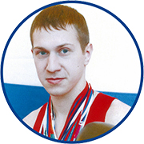

Ардышев Евгени / 1985г.р.
Мастер спорта по боксу
Призер Первенства России среди юниоров 2002г.
Чемпион Уральского Федерального округа по боксу 2004г.
Бабкин Андрей / 1984г.р.
Кандидат в мастера спорта
Победитель Первенства Свердловской области среди юниоров (г. Каменск-Уральский) 2002г.
Победитель турнира класса «Б» имени Засухина (г. Екатеринбург) 2001г.
2-х кратный призер Первенства Вооруженных сил РФ (г. Дмитровград) 2002-2003г.
Серебряный призер Первенства России среди студентов (г. Тюмень) 2000г.
3-х кратный призер Первенства УРФО по боксу (г. Нижный Тагил) 1999-2002г.
Бронзовый призер Международного турнира класса «А» на призы Б.Н. Никонорова (г. Москва) 2000г.
Бронзовый призер 14 Международного турнира класса «Б» памяти Г.К. Жукова (г. Екатеринбург)
2003г.
Участник Первенства России (г. Курск) 2000г.
Участник Кубка России (г. Ульяновск) 2000г.
Участник Первенства России среди ДЮСШ, СДЮСШОР, УОР (г. Оренбург) 2000г.
Победитель Чемпионата Свердловской области по кикбоксингу (г. Екатеринбург)_ 2003г.
Болдырев Дмитрий Михайлович
Судья национальной категории
Кандидат в мастера спорта по боксу
Кандидат в мастера спорта по кикбоксингу
Васильев Сергей / 1996г.р.
Кандидат в мастера спорта по боксу.
Кандидат в мастера спорта по кикбоксингу.
Победитель Первенства Свердловской области 2010г.
Победитель Первенства УРФО 2010г.
Бронзовый призер Первенства ВС РФ по боксу 2010г.
Бронзовый призер Первенства УРФО 2014г.
Бронзовый призер Первенства РСОС 2014г.
Бронзовый призер чемпионата УРФО 2016г.
Серебряный призер Первенства Свердловской области 2009, 2011, 2012, 2014г.
Виноградов Александр
Кандидат в мастера спорта по боксу
Победитель Первенства Свердловской области 2013, 2015.
Финалист Первенства УРФО 2015.
Призер Первенства УРФО 2013.
Победитель международного турнира в Казахстане 2014.
Победитель «кубка Урала» 2015.
Серебряный призер Первенства Свердловской области по боксу среди юниоров 17-18 лет и юношей 15-16,
2017г.
Олег Галиякберов / 1979г.р.
Мастер спорта по кикбоксингу
Двукратный финалист Чемпионата России по кикбоксингу 1998, 1999г.
Чемпион кубка России по кикбоксингу 1998г.
Неоднократный участник профессионального турнира «SawUltimate» 1999, 2001г.
Ждановских Руслан / 1995г.р.
Мастер спорта по боксу.
Кандидат в мастера спорта по кикбоксингу.
Победитель Первенства области по боксу 2008-2011 г.
Победитель Первенства УРФО по боксу среди юношей г. Челябинск 2008г.
Победитель Первенства России РССС по боксу среди юношей г. Ишим 2008г.
Победитель Первенства ВС РФ по боксу среди юношей г. Михайловка 2008г.
Бронзовый призер Первенства по боксу среди юношей г. Анапа 2008г.
Серебряный призер Первенства России по боксу среди средних юношей 1995-1996 г.г. рождения, г.Анапа.
2009г.
Победитель Первенства ВС РФ среди юношей Ставропольский край, ст. Суворовская 2010г.
Победитель Первенства УРФО по боксу г. Магнитогорск.
Серебряный призер Первенства Свердловской области по кикбоксингу г. Полевской 2013г.
Победитель Чемпионата г. Екатеринбурга 2013-2014г.
Победитель Всероссийского турнира класса «А» г. Уфа 2014г.
Бронзовый призер 29 открытого окружного традиционного турнира по боксу «Снежинка» г. Приобье
2014г.
Участник Чемпионата УРФО 2015-2016 г. Курган
.
Серебряный призер первенства УРФО среди молодежи 19-22 лет г. Волчанск.
Серебряный призер Чемпионата России среди студентов 2015г. г. Казань.
Чемпион Свердловской области 2016г. г. Нижний Тагил.
Ильиных Владислав / 1996г.р.
Кандидат в мастера спорта по боксу
Серебряный призер Первенства России РССС по боксу среди старших юношей (г. Аскай) 2009г.
Бронзовый призер Первенства России ВФСО «Динамо» по боксу среди средних юношей (г. Челябинск)
2009г.
Неоднократный победитель областных и региональных турниров по боксу среди средних юношей в
2009г.
Победитель Первенства Российского спортивного студенческого союза по боксу среди средних юношей (г .
Тюмень) 2010г.
Серебряный призер Первенства Свердловской области по боксу среди страших юношей (г. Нижняя Тура)
2011г.
Победитель областного турнира по боксу «Весенние каникулы» среди старших юношей (г.
Екатеринбург)
Исаков Егор / 1982г.р.
Кандидат в мастера спорта по боксу
Призер турнира памяти Г.К.Жукова 2003г.
Призер Чемпионата России среди студентов (г. Санкт-Петербург) 2004г.
Призер международного турнира памяти Хохрякова 2004г.
Финалист Областных соревнований 2002г.
Финалист области среди студентов 2003-2004г.
Победитель области среди студентов 2004г.
Участник Чемпионата области среди студентов г.Тюмень 2003г.
Участник Чемпионата России среди военнослужащих 2004г.
Призер УРФО (г. Излучинск) 2004г.
Казанцев Александр / 1982г.р.
Кандидат в мастера спорта по боксу
Мастер спорта по кикбоксингу
Серебряный призер 12-го международного турнира класса «А» памяти Г.К.Жукова по боксу 2001г.
г.Екатеринбург.
Бронзовый призер 13 и 14 международного турнира класса «А» памяти Г.К.Жукова по боксу 2002-2003г.
г.Екатеринбург.
Бронзовый призер Чемпионата России по боксу среди студентов 2001г. г.Тюмень.
Серебряный призер Чемпионата России в разделе фул-контакт с лоукиком по кикбоксингу 2003г.
г.Челябинск.
Серебряный призер Кубка России по кикбоксингу в разделе фул-контакт с лоукиком 2004г.
г.Челябинск.
Чемпион Свердловской области в разделе фул-контакт по кикбоксингу 2001-2002г. г.Екатеринбург.
Кевхиев Михаил
Мастер спорта по кикбоксингу.
Чемпион Уральского Федерального округа по кикбоксингу (г. Челябинск) 2006-2007г.
Чемпион России по кикбоксингу в разделе лайт-контакт (г. Нижний Тагил) 2009г.
Участник Чемпионата мира по кикбоксингу в разделе лайт-контакт (Австрия) 2009г.
Килунин
Клепиков Александр / 1991г.р
Кандидат в мастера спорта по боксу
-Победитель Всероссийского турнира по боксу среди юношей 2005г (г.Асбест)
-Двукратный победитель первенства Свердловской области по боксу 2005, 2006 (г.Первоуральск,
г.Екатеринбург)
-Двукратный победитель первенства УрФО по боксу 2005, 2006 (г.Копейск, г.Екатеринбург)
-Бронзовый призер Первенства России по боксу 2005 (г.Анапа)
-Серебряный призер Первенства России по боксу 2006 (г.Анапа)
Корольков Эдуард / 1993г.р.

Кандидат в мастера спорта по боксу.
Победитель Первенства России по боксу среди средних юношей г. Анапа 2007г.
Победитель Северо-Западного федерального округа по боксу среди юношей Карелия 2009г.
Участник Первенства России по боксу среди юношей г. Октябрьский 2009г.
Победитель Спартакиады учащихся Свердловской области по боксу г. Нижняя Тура 2009г.
Бронзовый призер Спартакиады учащихся Уральского федерального округа по боксу среди юношей г.
Челябинск 2009г.
Победитель Первенства Свердловской области по боксу среди юниоров г. Карпинск 2010г.
Крушинин Николай
Кандидат в мастера спорта по боксу
Трехкратный победитель Первенства ХМАО по боксу.
Финалист первенства УРФО по боксу.
Победитель Первенства ВФСО «Динамо» по боксу.
Финалист Первенства России по боксу (г. Туапсе)
Победитель Всероссийского турнира класса «Б» (г. Нягань)
Минаков Артем Владимирович / 1996г.р.
Мастер спорта по боксу.
Кандидат в мастера спорта по кикбоксингу.
Финалист Первенства РССС, 2009г. г.Аскай.
Бронзовый призер первенства ВФСО ЦС Динамо, 2009г.г.Челябинск.
Финалист Первенства Свердловской области 2010г. г.Серов.
Бронзовый призер Первенства УРФО 2010г. г.Магнитогорск.
Победитель Первенства Свердловской области 2012г. г.Екатеринбург.
Бронзовый призер первенства УРФО 2012г. г.Курган.
Победитель всероссийского турнира памяти тренеров-преподавателей ХМАО-ЮГРЫ 2014г. г.Сургут.
Бронзовый призер международного турнира памяти Маршала Советского Союза Г.К.Жукова 2016г.
г.Екатеринбург.
Победитель 49-х Всероссийских соревнований по боксу класса «А» памяти дважды Героя Советского Союза
С.В.Хохрякова с участием боксеров стран ближнего зарубежья 2017г. г.Копейск.
Муха Антон / 1991г.р.
Мастер спорта по кикбоксингу
Кандидат в мастера спорта по боксу
Финалист Первенства УРФО по боксу среди студентов (г. Екатеринбург) 2014г.
Чемпион областной универсиады по боксу 2010-2014г.
Чемпион России среди клубов по кикбоксингу (г. Туймазы) 2014г.
Победитель турнира класса «Б» на призы братьев Засухиных 2009-2010г.
Победитель Чемпионата г. Екатеринбурга 2010г.
Финалист Чемпионата г. Екатеринбурга 2011-2013г.
Финалист турнира класса «Б» (г. Магнитогорск) 2009г.
Серебряный призер 29 открытого окружного традиционного турнира по боксу «Снежинка» (г. Приобье)
2014г.
Папоян Лариса / 1994г.р.
Кандидат в мастера спорта по боксу.
Победитель традиционного турнира «Памяти героя ССР А.И.Вяткина» (г. Ревда) 2009г.
Участница всероссийского турнира по боксу «Олимпийские надежды» (г. Челябинск) 2009г.
Победитель Кубка главы города Челябинска по боксу 2009г.
Серебряный призер Открытого турнира по боксу памяти Заслуженного тренера СССР, мастера спорта СССР
А.А. Деменьтева (г. Каменск-Уральский) 2009г.
Серебряный призер регионального турнира по боксу памяти В.А.Трифонова (г.Новоуральск) 2009г.
Победитель Первенства Свердловской области по боксу среди девушек (г. Ревда) 2010г.
Победитель Первенства УРФО по боксу среди девушек (г. Челябинск) 2010г.
Победитель Первенства Свердловской области по боксу среди юниорок (г. Нижний Тагил) 2011г.
Бронзовый призер Первенства России по боксу среди юниорок (г.Тула) 2011г.
Разливинских Александр / 1981г.р.
Мастер спорта по рукопашному бою
Кандидат в мастера спорта по кикбоксингу
Чемпион Урала – Сибирского региона по ушу саньда с 1999 по 2002г.
Чемпон России по ушу саньда 2000г.
Призер Кубка Губернатора Челябинской области по кикбоксингу 2000г.
Чемпион 11 турнира по рукопашному бою на призы «ИНТЕР/БОСС-Е» 2003г.
Чемпион Уральского округа ВВ МВД России по рукопашному бою 2004г.
Призер Открытого чемпионата УРФО по рукопашному бою посвященного памяти сотрудников ОМОН ГУВД
Свердловской области, погибших при исполнении служебного долго 2004г.
Сычкарь Алексей / 1986г.р.
Кандидат в мастера спорта по боксу.
Чемпион Свердловской области.
Финалист Универсиады.
Призер Первенства России среди студентов.
Толмачев Кирилл / 1999г.р.
Победитель Открытого Первенства Талицкого Г.О. по боксу на призы Главы Администрации Т.Г.О. (г.
Талица) 2010г.,
Финалист областного турнира «Посвященный 67-й годовщине Победы в ВОВ» 2010г.,
Финалист областного турнира по боксу « Мемориал Д. Бочкарева» ( г. Карпинск) 2010г.,
Победитель Открытого турнира ( Верхняя Пышма) 2011г
Фароян Зураб / 1984г.р
Заслуженный мастер спорта по кикбоксингу
-Чемпион Европы по кикбоксингу в разделе фулл-контакт. Сербия. 2004г.
-Чемпион Мира по кикбоксингу в разделе фулл-контакт. Венгрия. 2005г.
-Чемпион Европы по кикбоксингу в разделе фулл-контакт.
Португалия. 2006.
-Чемпион Европы по кикбоксингу в разделе фулл-контакт с лоу-киком. Македония. 2006.
-Чемпион Мира по кикбоксингу в разделе фулл-контакт.
Португалия. 2007г.
-Чемпион Европы по кикбоксингу в разделе фулл-контакт с лоу-киком. Югославия. 2007г.
-Чемпион Европы по кикбоксингу в разделе фулл-контакт с лоу-киком. Португалия. 2008г.
-Чемпион России по кикбоксингу в разделе фулл-контакт.
Г.Нальчик. 2009г.
-Серебряный призер Чемпионата Мира по кикбоксингу в разделе фулл-контакт. Италия. 2009г.
-Чемпион Европы по кикбоксингу в разделе фулл-контакт.
Греция. 2010г.
-Чемпион России по кикбоксингу в разделе фулл-контакт с лоу-киком. Омск. 2011г.
-Чемпион Мира по кикбоксингу в разделе фулл-контакт.
Италия. 2011г.
-Чемпион Европы по кикбоксингу в разделе фулл-контакт.
Турция. 2012г.
-Победитель Кубка России по кикбоксингу в разделе фулл-контакт. г.Магнитогорск. 2013г.
-Победитель Кубка России по кик-боксингу в разделе фулл-контакт. г.Челябинск. 2014г.
Хурсанов Сергей
Кандидат в мастера спорта по боксу
Финалист Первенства России 2000-2001г.
Победитель Первенства Свердловской области по кикбоксингу 2004г.
Финалист Первенства УРФО по кикбоксингу 2004г.
Финалист Первенства России по кикбоксингу 2004г.
г. Екатеренбург, ул. Бакинских комиссаров, 131
e-mail: clubbox@inbox.ru
тел.: +7 (912) 266 82 92
ИНН/КПП 663999231/660301001
ОГРН 1116600004950
ОКПО 37931294